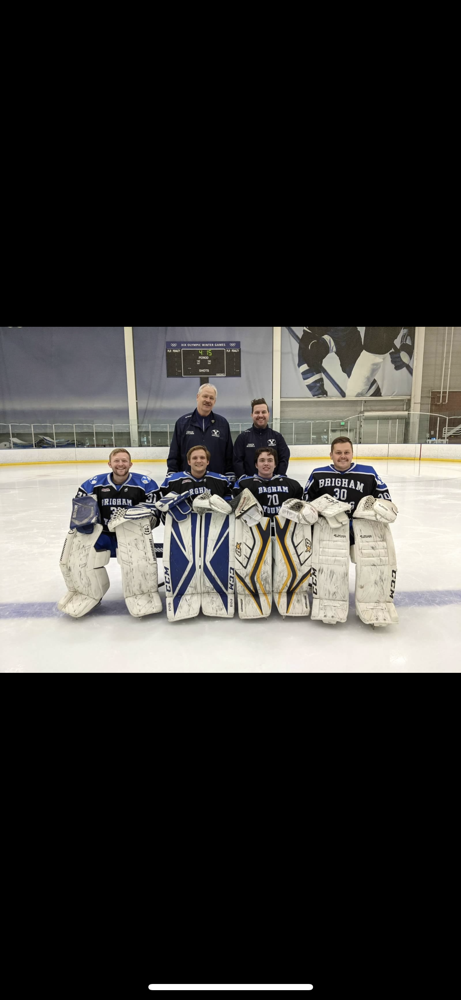
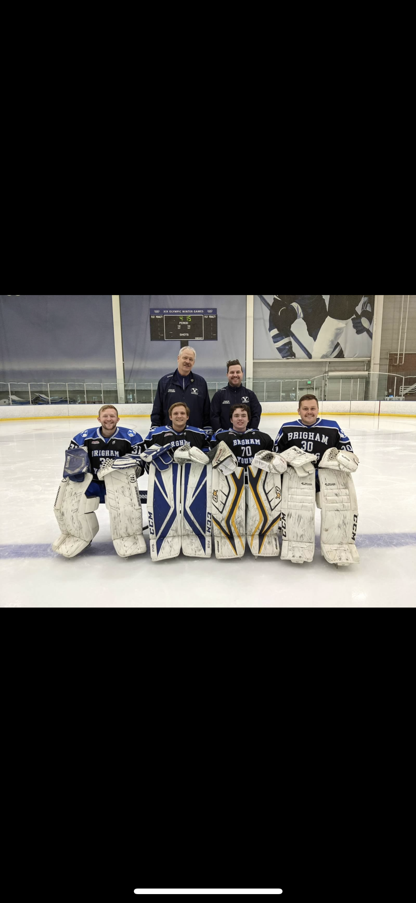
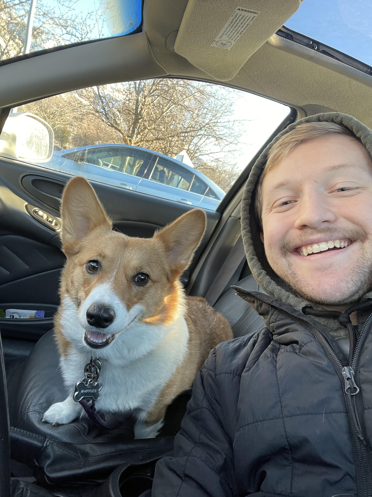
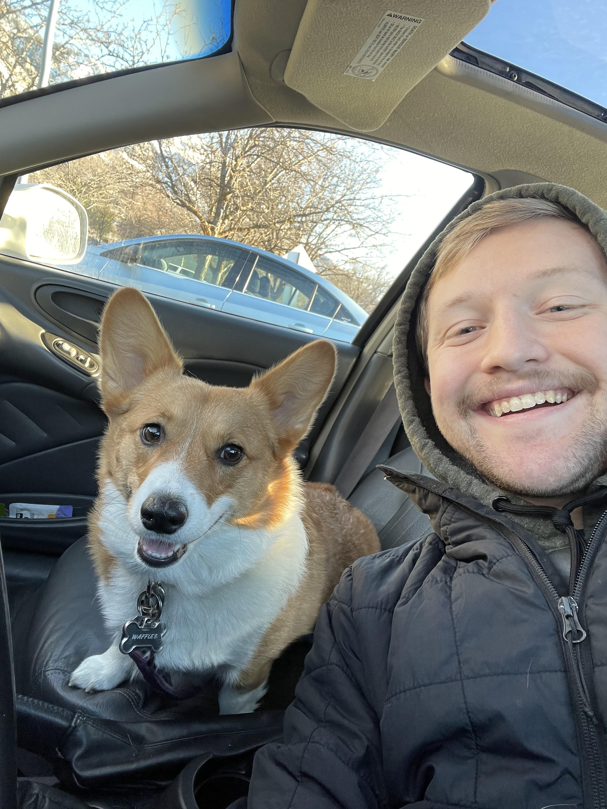

 

Hello, my name is Ian Cook. I am a junior in the BYU Cybersecurity Program. I was drawn to study computers and technology from my excitement in solving problems and making the world a better place. Within Cybersecurity, I am especially interested in the defensive security side, focusing on threat management and cybersecurity research. While at BYU, I have worked as a Systems admin, and now presently I lead the Cybersecurity Research Lab and work as a Security Engineer for the College of Life Sciences. This upcoming summer I will intern at Peraton Labs as a Cybersecurity Research Intern. Coming up on my last year at BYU, I am looking to learn more about different careers and career paths in Cybersecurity, as well as expose myself to as much industry experience as possible.